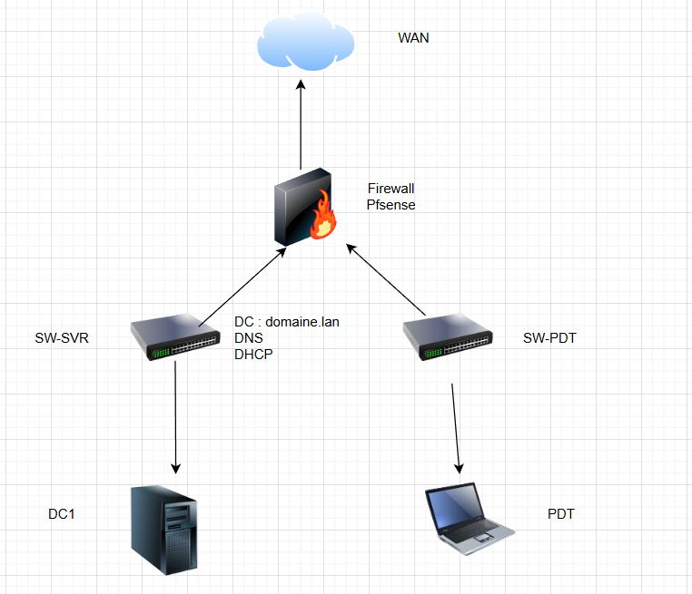
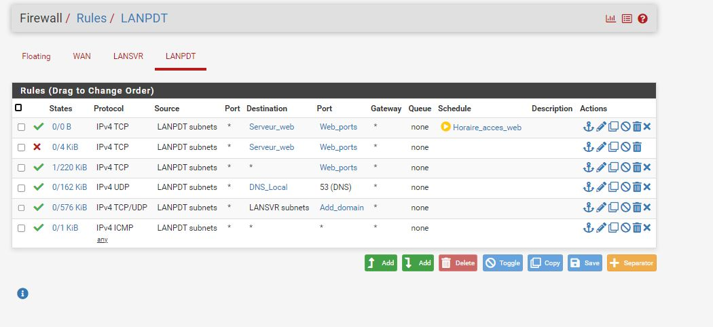
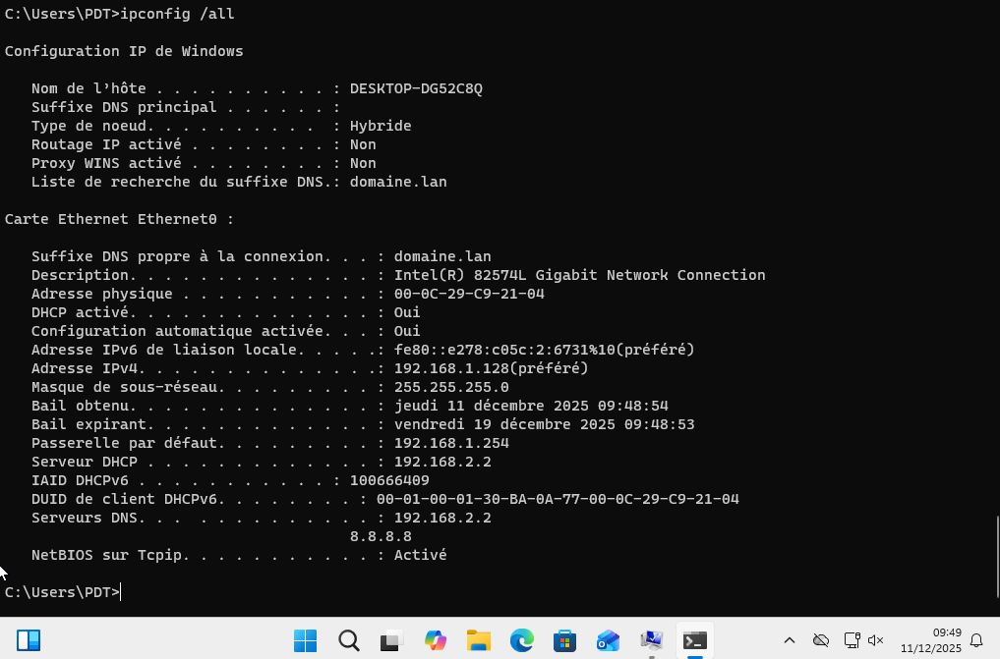
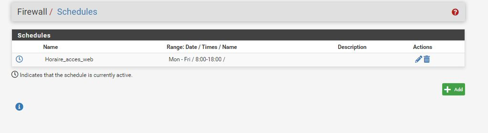

BTS · SISR
Pare-feu pfSense et réseau segmenté
Séparer deux réseaux privés par un pare-feu, avec alias, règles, relais DHCP et règle horaire.
- pfSense
- VMware
- Windows Server
- DNS / DHCP
- IIS
Contexte
Deux réseaux : un serveur (DC1 : DNS, DHCP, IIS) et un poste de travail (PDT), reliés par un pfSense qui filtre les flux.
Résultat
Résolution DNS et DHCP via le relais fonctionnels, poste intégré au domaine, accès au serveur web limité à une plage horaire.
Étapes de réalisation
- Interfaces. WAN et deux LAN, plan d'adressage défini.
- Alias et règles. Alias de ports Web (80, 443) et DNS, règles pour DC1 et le poste.
- Relais DHCP. Étendue sur DC1, relais sur pfSense, vérification par /release puis /renew.
- Domaine. Alias regroupant les ports AD pour intégrer le poste au domaine.
- Règle horaire. Planification (Schedule) et règle de blocage hors plage, avec contrôle de l'ordre des règles.
Captures




Difficultés rencontrées
- L'ordre des règles : une règle de blocage placée avant l'autorisation annule tout.
Compétences
- Pare-feu
- Règles et alias
- DHCP / DNS
- Active Directory